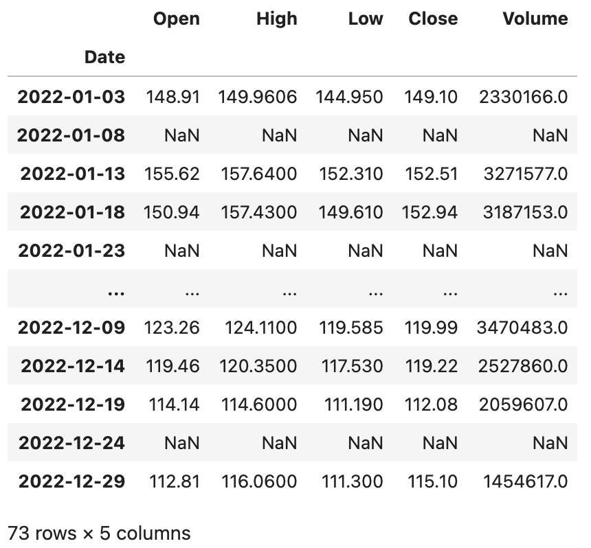
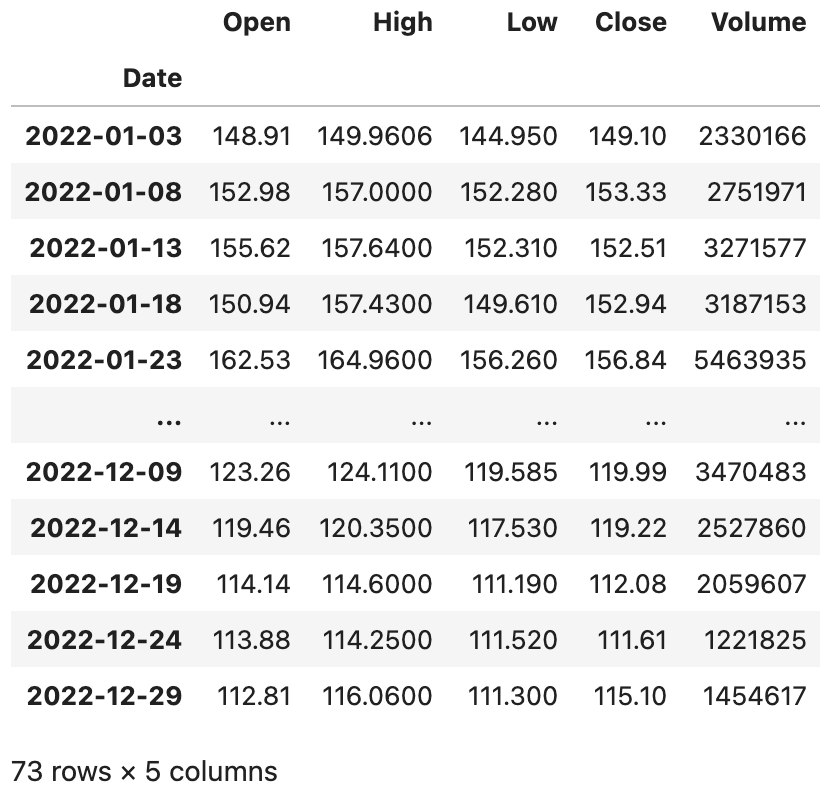
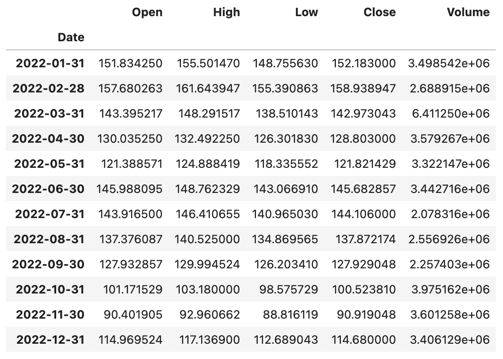
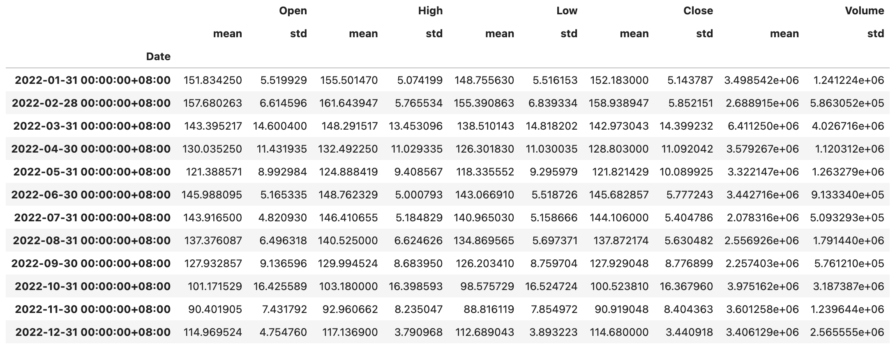
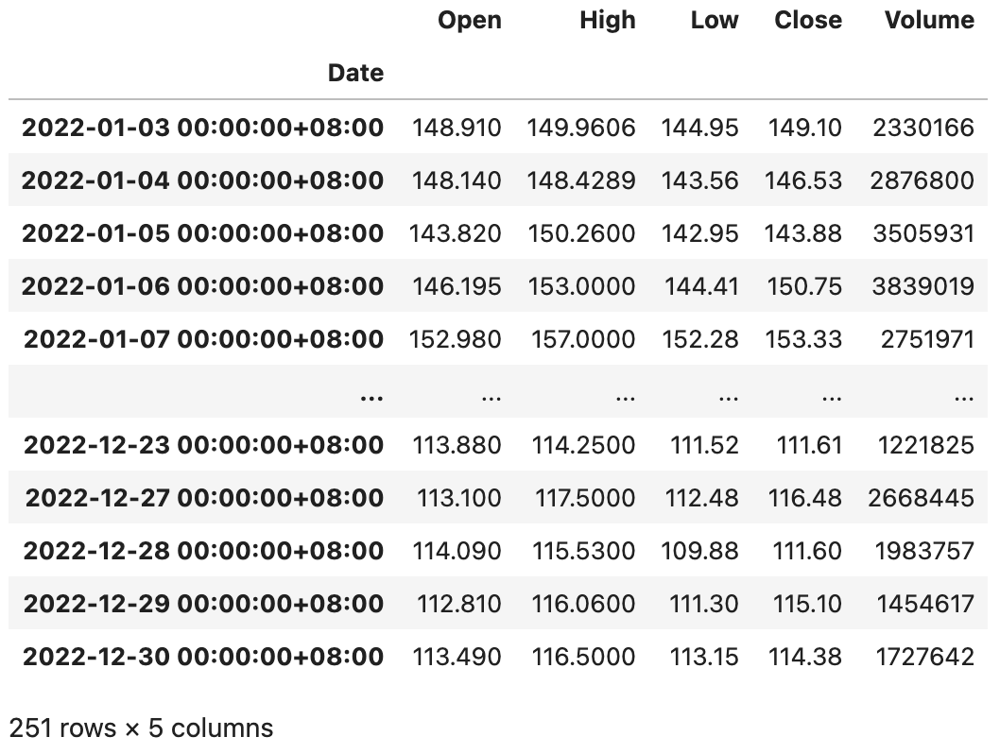
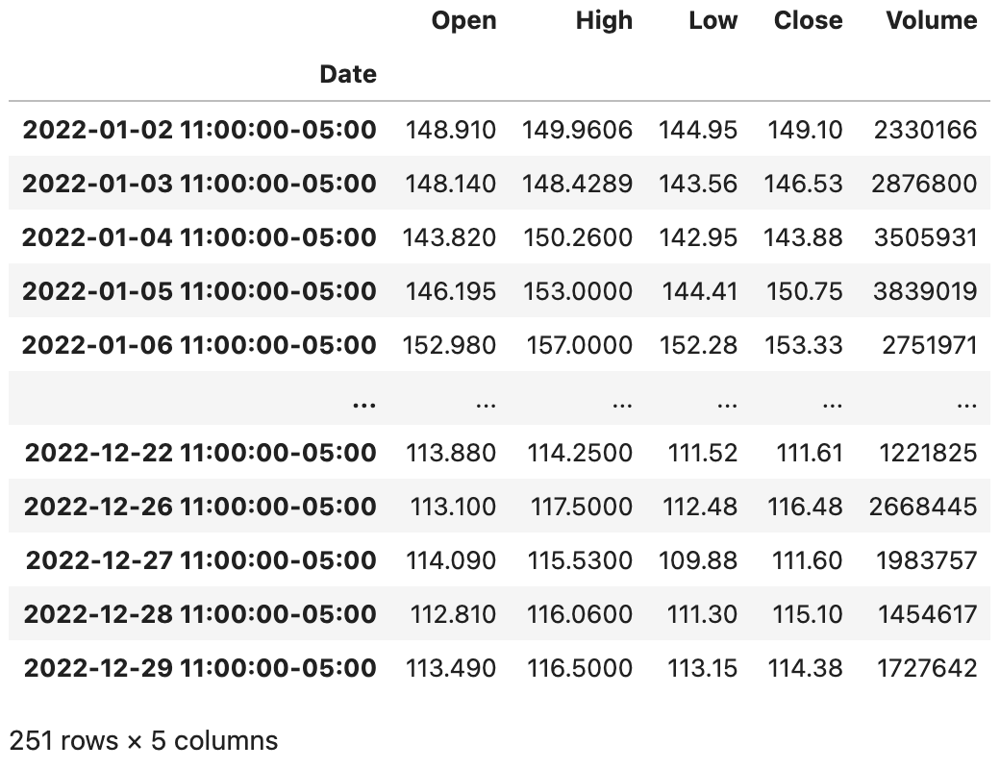

深入浅出pandas-6
我们再来看看Index类型，它为Series和DataFrame对象提供了索引服务，有了索引我们就可以排序数据（sort_index方法）、对齐数据（在运算和合并数据时非常重要）并实现对数据的快速检索（索引运算）。由于DataFrame类型表示的是二维数据，所以它的行和列都有索引，分别是index和columns。Index类型的创建的比较简单，通常给出data、dtype和name三个参数即可，分别表示作为索引的数据、索引的数据类型和索引的名称。由于Index本身也是一维的数据，索引它的方法和属性跟Series非常类似，你可以尝试创建一个Index对象，然后尝试一下之前学过的属性和方法在Index类型上是否生效。接下来，我们主要看看Index的几种子类型。
范围索引
范围索引是由具有单调性的整数构成的索引，我们可以通过RangeIndex构造器来创建范围索引，也可以通过RangeIndex类的类方法from_range来创建范围索引，代码如下所示。
代码：
sales_data = np.random.randint(400, 1000, 12)
index = pd.RangeIndex(1, 13, name='月份')
ser = pd.Series(data=sales_data, index=index)
ser
输出：
月份
1 703
2 705
3 557
4 943
5 961
6 615
7 788
8 985
9 921
10 951
11 874
12 609
dtype: int64
分类索引
分类索引是由定类尺度构成的索引。如果我们需要通过索引将数据分组，然后再进行聚合操作，分类索引就可以派上用场。分类索引还有一个名为reorder_categories的方法，可以给索引指定一个顺序，分组聚合的结果会按照这个指定的顺序进行呈现，代码如下所示。
代码：
sales_data = [6, 6, 7, 6, 8, 6]
index = pd.CategoricalIndex(
data=['苹果', '香蕉', '苹果', '苹果', '桃子', '香蕉'],
categories=['苹果', '香蕉', '桃子'],
ordered=True
)
ser = pd.Series(data=sales_data, index=index)
ser
输出：
苹果 6
香蕉 6
苹果 7
苹果 6
桃子 8
香蕉 6
dtype: int64
基于索引分组数据，然后使用sum进行求和。
ser.groupby(level=0).sum()
输出：
苹果 19
香蕉 12
桃子 8
dtype: int64
指定索引的顺序。
ser.index = index.reorder_categories(['香蕉', '桃子', '苹果'])
ser.groupby(level=0).sum()
输出：
香蕉 12
桃子 8
苹果 19
dtype: int64
多级索引
Pandas 中的MultiIndex类型用来表示层次或多级索引。可以使用MultiIndex类的类方法from_arrays、from_product、from_tuples等来创建多级索引，我们给大家举几个例子。
代码：
tuples = [(1, 'red'), (1, 'blue'), (2, 'red'), (2, 'blue')]
index = pd.MultiIndex.from_tuples(tuples, names=['no', 'color'])
index
输出：
MultiIndex([(1, 'red'),
(1, 'blue'),
(2, 'red'),
(2, 'blue')],
names=['no', 'color'])
代码：
arrays = [[1, 1, 2, 2], ['red', 'blue', 'red', 'blue']]
index = pd.MultiIndex.from_arrays(arrays, names=['no', 'color'])
index
输出：
MultiIndex([(1, 'red'),
(1, 'blue'),
(2, 'red'),
(2, 'blue')],
names=['no', 'color'])
代码：
sales_data = np.random.randint(1, 100, 4)
ser = pd.Series(data=sales_data, index=index)
ser
输出：
no color
1 red 43
blue 31
2 red 55
blue 75
dtype: int64
代码：
ser.groupby('no').sum()
输出：
no
1 74
2 130
dtype: int64
代码：
ser.groupby(level=1).sum()
输出：
color
blue 106
red 98
dtype: int64
代码：
stu_ids = np.arange(1001, 1006)
semisters = ['期中', '期末']
index = pd.MultiIndex.from_product((stu_ids, semisters), names=['学号', '学期'])
courses = ['语文', '数学', '英语']
scores = np.random.randint(60, 101, (10, 3))
df = pd.DataFrame(data=scores, columns=courses, index=index)
df
输出：
语文 数学 英语
学号 学期
1001 期中 93 77 60
期末 93 98 84
1002 期中 64 78 71
期末 70 71 97
1003 期中 72 88 97
期末 99 100 63
1004 期中 80 71 61
期末 91 62 72
1005 期中 82 95 67
期末 84 78 86
根据第一级索引分组数据，按照期中成绩占25%，期末成绩占75% 的方式计算每个学生每门课的成绩。
代码：
df.groupby(level=0).agg(lambda x: x.values[0] * 0.25 + x.values[1] * 0.75)
输出：
语文 数学 英语
学号
1001 93.00 92.75 78.00
1002 68.50 72.75 90.50
1003 92.25 97.00 71.50
1004 88.25 64.25 69.25
1005 83.50 82.25 81.25
间隔索引
间隔索引顾名思义是使用固定的间隔范围充当索引，我们通常会使用interval_range函数来创建间隔索引，代码如下所示。
代码：
index = pd.interval_range(start=0, end=5)
index
输出：
IntervalIndex([(0, 1], (1, 2], (2, 3], (3, 4], (4, 5]], dtype='interval[int64, right]')
IntervalIndex有一个名为contains的方法，可以检查范围内是否包含了某个元素，如下所示。
代码：
index.contains(1.5)
输出：
array([False, True, False, False, False])
IntervalIndex还有一个名为overlaps的方法，可以检查一个范围跟其他的范围是否有重叠，如下所示。
代码：
index.overlaps(pd.Interval(1.5, 3.5))
输出：
array([False, True, True, True, False])
如果希望间隔范围是左闭右开的状态，可以在创建间隔索引时通过closed='left'来做到；如果希望两边都是关闭状态，可以将close参数的值赋值为both，代码如下所示。
代码：
index = pd.interval_range(start=0, end=5, closed='left')
index
输出：
IntervalIndex([[0, 1), [1, 2), [2, 3), [3, 4), [4, 5)], dtype='interval[int64, left]')
代码：
index = pd.interval_range(start=pd.Timestamp('2022-01-01'), end=pd.Timestamp('2022-01-04'), closed='both')
index
输出：
IntervalIndex([[2022-01-01, 2022-01-02], [2022-01-02, 2022-01-03], [2022-01-03, 2022-01-04]], dtype='interval[datetime64[ns], both]')
日期时间索引
DatetimeIndex应该是众多索引中最复杂最重要的一种索引，我们通常会使用date_range()函数来创建日期时间索引，该函数有几个非常重要的参数start、end、periods、freq、tz，分别代表起始日期时间、结束日期时间、生成周期、采样频率和时区。我们先来看看如何创建DatetimeIndex对象，再来讨论它的相关运算和操作，代码如下所示。
代码：
pd.date_range('2021-1-1', '2021-6-30', periods=10)
输出：
DatetimeIndex(['2021-01-01', '2021-01-21', '2021-02-10', '2021-03-02',
'2021-03-22', '2021-04-11', '2021-05-01', '2021-05-21',
'2021-06-10', '2021-06-30'],
dtype='datetime64[ns]', freq=None)
代码：
pd.date_range('2021-1-1', '2021-6-30', freq='W')
说明：
freq=W表示采样周期为一周，它会默认星期日是一周的开始；如果你希望星期一表示一周的开始，你可以将其修改为freq=W-MON；你也可以试着将该参数的值修改为12H，M，Q等，看看会发生什么，相信你不难猜到它们的含义。
输出：
DatetimeIndex(['2021-01-03', '2021-01-10', '2021-01-17', '2021-01-24',
'2021-01-31', '2021-02-07', '2021-02-14', '2021-02-21',
'2021-02-28', '2021-03-07', '2021-03-14', '2021-03-21',
'2021-03-28', '2021-04-04', '2021-04-11', '2021-04-18',
'2021-04-25', '2021-05-02', '2021-05-09', '2021-05-16',
'2021-05-23', '2021-05-30', '2021-06-06', '2021-06-13',
'2021-06-20', '2021-06-27'],
dtype='datetime64[ns]', freq='W-SUN')
DatatimeIndex可以跟DateOffset类型进行运算，这一点很好理解，以为我们可以设置一个时间差让时间向前或向后偏移，具体的操作如下所示。
代码：
index = pd.date_range('2021-1-1', '2021-6-30', freq='W')
index - pd.DateOffset(days=2)
输出：
DatetimeIndex(['2021-01-01', '2021-01-08', '2021-01-15', '2021-01-22',
'2021-01-29', '2021-02-05', '2021-02-12', '2021-02-19',
'2021-02-26', '2021-03-05', '2021-03-12', '2021-03-19',
'2021-03-26', '2021-04-02', '2021-04-09', '2021-04-16',
'2021-04-23', '2021-04-30', '2021-05-07', '2021-05-14',
'2021-05-21', '2021-05-28', '2021-06-04', '2021-06-11',
'2021-06-18', '2021-06-25'],
dtype='datetime64[ns]', freq=None)
代码：
index + pd.DateOffset(hours=2, minutes=10)
输出：
DatetimeIndex(['2021-01-03 02:10:00', '2021-01-10 02:10:00',
'2021-01-17 02:10:00', '2021-01-24 02:10:00',
'2021-01-31 02:10:00', '2021-02-07 02:10:00',
'2021-02-14 02:10:00', '2021-02-21 02:10:00',
'2021-02-28 02:10:00', '2021-03-07 02:10:00',
'2021-03-14 02:10:00', '2021-03-21 02:10:00',
'2021-03-28 02:10:00', '2021-04-04 02:10:00',
'2021-04-11 02:10:00', '2021-04-18 02:10:00',
'2021-04-25 02:10:00', '2021-05-02 02:10:00',
'2021-05-09 02:10:00', '2021-05-16 02:10:00',
'2021-05-23 02:10:00', '2021-05-30 02:10:00',
'2021-06-06 02:10:00', '2021-06-13 02:10:00',
'2021-06-20 02:10:00', '2021-06-27 02:10:00'],
dtype='datetime64[ns]', freq=None)
如果Series对象或DataFrame对象使用了DatetimeIndex类型的索引，此时我们可以通过asfreq()方法指定一个时间频率来实现对数据的抽样，我们仍然以之前讲过的百度股票数据为例，给大家做一个演示。
代码：
baidu_df = pd.read_excel('data/2022年股票数据.xlsx', sheet_name='BIDU', index_col='Date')
baidu_df.sort_index(inplace=True)
baidu_df.asfreq('5D')
输出：

大家可能注意到了，每5天抽取1天有可能会抽中非交易日，那么对应的列都变成了空值，为了解决这个问题，在使用asfreq方法时可以通过method参数来指定一种填充空值的方法，可以将相邻的交易日的数据填入进来。
代码：
baidu_df.asfreq('5D', method='ffill')
输出：

当使用DatetimeIndex索引时，我们也可以通过resample()方法基于时间对数据进行重采样，相当于根据时间周期对数据进行了分组操作，分组之后还可以进行聚合统计，代码如下所示。
代码：
baidu_df.resample('1M').mean()
输出：

代码：
baidu_df.resample('1M').agg(['mean', 'std'])
输出：

提示：不知大家是否注意到，上面输出的
DataFrame的列索引是一个MultiIndex对象。你可以访问上面的DataFrame对象的columns属性看看。
如果要实现日期时间的时区转换，我们可以先用tz_localize()方法将日期时间本地化，代码如下所示。
代码：
baidu_df = baidu_df.tz_localize('Asia/Chongqing')
baidu_df
输出：

在对时间本地化以后，我们再使用tz_convert()方法就可以实现转换时区，代码如下所示。
代码：
baidu_df.tz_convert('America/New_York')
输出：

如果你的数据使用了DatetimeIndex类型的索引，那么你就很有可能要对数据进行时间序列分析，关于时间序列分析的方法和模型并不是本章节要探讨的内容，我们在其他的专栏中为大家分享。